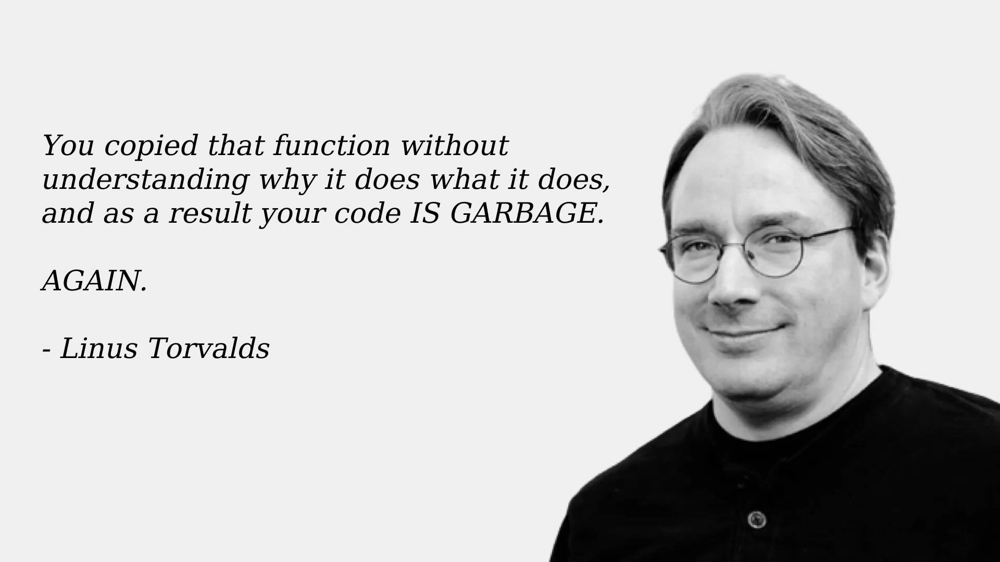

Programmazione ad Oggetti
Organizzazione del Laboratorio
- Due turni settimanali
- Il contenuto della lezione e dell’esecitazione settimanale del laboratorio è il medesimo per entrambi i turni
- La gestione della partecipazione ai turni è demandata al prof. Viroli
- Nello stesso giorno avrete sia OOP che OS
Primo Turno (iniziale cognome nell’intervallo [A-La])
- Lunedì, 9:00 - 13:00
- Lab. 2.2, Campus Cesena
Secondo Turno (iniziale cognome nell’intervallo [Lb-Z])
- Martedì, 13:00 - 17:00
- Lab. 2.2, Campus Cesena
Docenti del Laboratorio
Prof. Danilo Pianini
- Responsabile dei moduli di laboratorio
- mail:
danilo.pianini@unibo.it
- ricevimento: su appuntamento, da concordare via mail
Ing. Martina Baiardi
- Tutor didattico
- mail:
m.baiardi@unibo.it
- ricevimento: su appuntamento, da concordare via mail
Ing. Nicolas Farabegoli
- Tutor didattico
- mail:
nicolas.farabegoli@unibo.it
- ricevimento: su appuntamento, da concordare via mail
Regole di ingaggio
- Si utilizzi il forum del corso per qualunque dubbio tecnico
- Si utilizzi l’email solo in caso di problemi strettamente personali
- Un esercizio che non riuscite a risolvere non è un problema strettamente personale
- Se si invia una email, si mettano in copia tutti i docenti: Viroli, Pianini, Baiardi, e Farabegoli
Il Laboratorio
- Consente di mettere in pratica quanto visto nelle lezioni in aula
- lo studente affronta gli esercizi in prima persona
- approccio cooperativo: lo studente può (ed è invitato a) richiedere il supporto diretto dei pari, dei tutor, e del docente
- Integra ed espande i contenuti affrontati in aula
- Introduce nuovi argomenti (non affrontati in aula!)
- Strumenti, metodologie, pratiche, librerie…
- Fondamentale per arrivare preparati all’esame, e soprattutto per riuscire a fare un buon progetto
Organizzazione di ciascun turno di laboratorio
- Lezione Frontale (40-80 min)
- Introduce nuovi concetti non visti in aula
- Esercitazione
- Un set di esercizi da svolgere in autonomia
- Evocando il docente in caso di difficoltà
- Chiedendo sempre ai docenti una correzione finale
Pause
Da che termina la parte iniziale, siamo in modalità “pausa dinamica”: potete entrare e uscire dall’aula a piacimento
- Una sola regola: se siete in lab, allora state lavorando
- Se avete fame, sete, necessità fisiologiche, voglia di una pausa,
voglia di andare su TikTok, bisogno di fare una partita a Fortnite…
no problem: uscite e rientrate
- Motivo: distrae moltissimo avere persone intorno che fanno cose decisamente più divertenti che scervellarsi su un esercizio
Svolgimento di ciascun esercizio
- Lettura attenta della consegna
- Contattare un docente in caso di dubbi
- Svolgimento dell’esercizio
- Attraverso esecuzione precisa dei passi riportati nella consegna
- Contattare un docente in caso di difficoltà
- Segnalazione al docente/tutor del avvenuto completamento
- La correzione è fondamentale!
- Nella correzione, progressivamente, vi verranno dati suggerimenti per passare da “qualcosa che funziona”
a qualcosa di ben fatto!
- Ricordate che in OOP “funziona” non è una metrica di qualità sufficiente
Chiarimenti e spiegazioni dopo il laboratorio
Per chiarimenti, ulteriori delucidazioni e spiegazioni fuori dall’orario di laboratorio
si incoraggia l’uso del Forum del Corso
- link accessibile dal sito del corso su Virtuale
- da preferire all’email inviata direttamente al/ai docente/i
Riguardo il forum
- Il dubbio di uno studente, probabilmente, è anche il dubbio di qualcun altro (condivisione)
- Gli studenti possono aiutarsi (discussione)
- Aiutare i colleghi sul forum è valutato positivamente
Riguardo l’email
- L’email resta il canale da utilizzare per comunicazioni confidenziali
- con l’accortezza di mettere sempre in copia tutti i docenti del corso
LLM e strumenti di AI
Esistono strumenti di intelligenza artificiale (tipicamente Large Language Models, LLM)
che possono essere utilizzati per generare codice.
- Allenati a partire da grandi quantità di codice sorgente preesistente
- Soggetti al problema “garbage in, garbage out”
- Risolvono molto bene problemi semplici
- Spesso commettono errori in problemi complessi
- Fruibili via web o integrati dentro l’ambiente di sviluppo
- Usati sempre di più, anche in contesti professionali
In questo corso: vietati
- Non sono consentiti a in lab
- Non sono consentiti a casa
- Non saranno disponibili per l’esame
- E sono abbastanza riconoscibili usando la similarità fra progetti, per la quale abbiamo strumenti che già usiamo
Motivazione
Sono strumenti potentissimi, ma è necessario saperli usare criticamente, altrimenti:
- Possono rallentare considerevolmente l’apprendimento
- Possono generare codice di bassa qualità (con bug, inefficienze, o problemi di stile che non riconoscete)
- Possono usare parti del linguaggio che ancora non potete conoscere
- Ergo, generare codice non comprensibile

Linus Torvalds, creatore di Linux, commentando un contributo contenente codice generato da un LLM
Contenuti
- Java toolchain (
java, javac, jar, etc.)
- VSCode IDE, strumenti di debug
- Rudimenti di build automation con Gradle
- Controllo di versione
- Documentazione (Javadoc)
- Testing (JUnit)
- Controllo di qualità del codice
- Programmazione multipiattaforma
- Profiling
- Sviluppo di GUI con JavaFX
Obiettivi e struttura del percorso
Acquisire le competenze necessarie per diventare:
- ottimi programmatori
- discreti progettisti
Il percorso
Il corso di laboratorio ha difficoltà crescente (superlinearmente, ossia diventa sempre più impegnativo sempre più velocemente)
- Le consegne e il codice passeranno in inglese
- Richiederemo capacità di analisi di trade-off di soluzioni alternative
- Richiederemo sempre maggior qualità
- Useremo strumenti via via più avanzati
Fondamentale: impegno e mettersi in gioco
È un corso molto impegnativo – lo sappiamo dalle valutazioni degli anni passati, e pensiamo sia giusto che lo sia…
- Richiede attenzione in aula
- Richiede attenzione e impegno in laboratorio
- Richiede studio e pratica anche a casa
- Purtroppo è difficile recuperare se si resta indietro, la disciplina aiuta!
- Dai docenti avrete il massimo supporto , ma il risultato dipende da voi!
Consiglio per chi conosce già Java o altri linguaggi OO/OB (come C#, Javascript, Python, Ruby…)
Impegnarsi fin dall’inizio, anche se nelle prime lezioni sembra facile, e restare sul pezzo!
- Assumere di conoscere già OOP rischia di essere molto controproducente
- Specialmente se si conosce un solo linguaggio OO!
Programmazione ad Oggetti